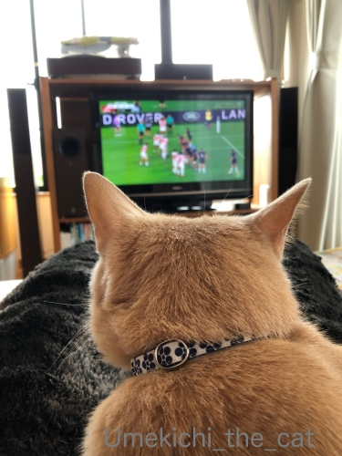
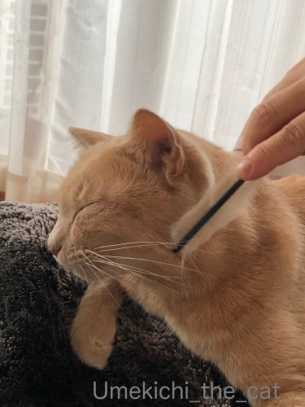
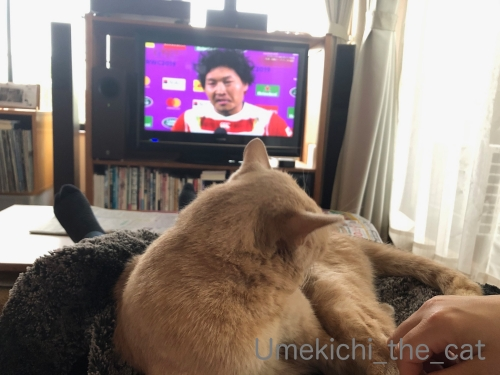
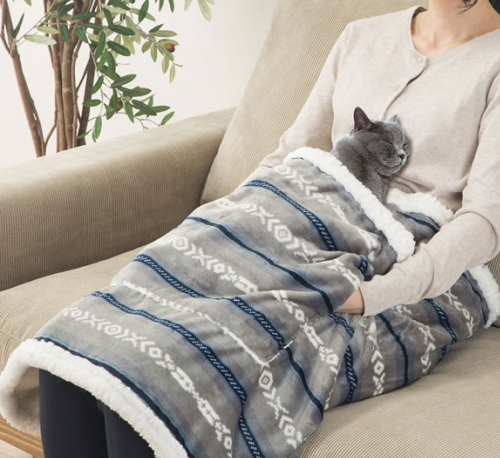
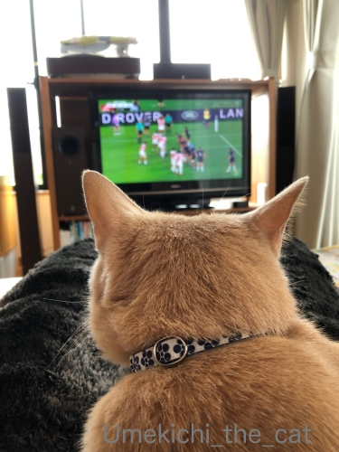
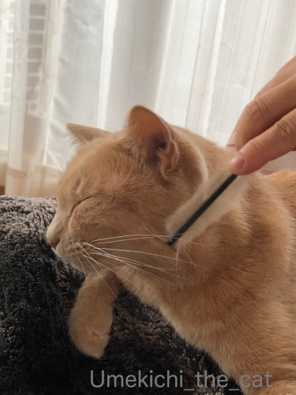
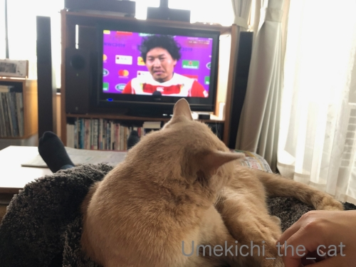
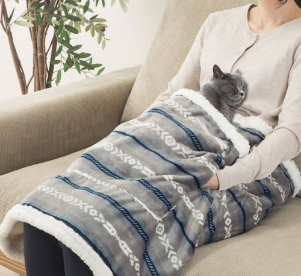

ラグビーのある休日 [梅吉]
お休みの日、梅吉さんをお膝に乗せてラグビー観戦。
VSスコットランド戦、本放送、再放送、録画を合わせて何度見たかしら・・・( ´艸｀)

梅吉さんはちゅうちゅうに励んでます＾＾
肌寒くなってきたら急にひっつき虫になりましたよ。

![[猫]](https://blog.ss-blog.jp/_images_e/101.gif) はっ！おかーさん どつきあってたで・・・
はっ！おかーさん どつきあってたで・・・
紳士だってエキサイトするんですよ。むしろこれが普通です。
試合前・試合中あれこれあってもノーサイドになればお互いリスペクトし合うのです。
それがラグビー精神！！紳士的振る舞い。
ジェイミー・リッチー選手、日本チームからのプレゼントの模擬刀を受け取ってにっこりの図。

ぜったいあかんやつや おもったけど ちゃうねんな・・・

時々ブラッシングタイムなど挟みつつ(≧▽≦)
年中換毛期っぽいですが、このところ更に抜けるようになりました。

あんひとは ちかいうちいんたいして おいしゃさんめざすんやて えらいもんやなぁ
おいしゃさんになっても あいどるっぽいしゃべりかたなんかなw
きっとかんじゃさんのにんきもんやでwww

わらわへんて？ これめっちゃえがお ちゃうのん？？

ジェイミーも男を上げましたね！
オフロードパス、エディ時代には禁止されていたもの。
導入には選手からの反発もあったとか。
理解を得るのは大変だったと思いますが、今では大きな戦力になってます。
他のチームの戦い方を見ても勝つためにはオフロードパス無しは考えられないです。
ジェイミー、ありがとう！！
今年は膝掛け買わないもん！と思っていたのですが・・・・・
(梅吉に新しいものを奪われるので毎年買っている）

（画像はニトリのHPよりお借りしました）
今年も買ってしまった( ´艸｀)
ニトリのペットが入れる膝掛け！
ポケットがついていてそこに猫様に入っていただく仕様。
ポケット左右の端が空いていてそこから手を入れる事が出来ます。
この写真みたいにすんなり梅吉が入ってくれるとは思ってませんけど・・・
この冬、どうなるのか楽しみです＾＾
 ↑ガブッと一押し↑
↑ガブッと一押し↑
20日（日）は南アフリカ戦！
この試合は７番フランカーのピーター・“ラピース”・ラブスカフニ選手に注目です。
南アフリカ出身。現在はクボタ・スピアーズでプレイしています。
出身国である南アフリカが相手なだけに燃えていると思います＾＾
W杯の決勝は11月2日（土）
今回の大会でラグビー漬けになって試合がない日は寂しい
W杯が終わってしまったらどうしようと思っている方！
国内社会人ラグビーの
トップリーグが来年2020年の1月12日に始まります。
２ヶ月近く空いちゃいますけど・・・
その間、ラグビーから遠ざかってしまわないようによろしくお願いしますm(_ _)m
そしてそして！！
ニュージーランド、オーストラリア、南アフリカ共和国、アルゼンチン、日本の５カ国
15のクラブチームが参加する国際リーグ戦スーパーラグビーも
同じく来年2020年に2月1日に日本で開幕！
来年（私にとって）最大の朗報は

なんと！サンウルブズ（日本唯一の出場チームです）の試合が
東大阪市は花園ラグビー競技場で行われること。大阪での試合は初めてなんです。
関東の方には2月15日のVS Chiefs戦をお勧めします。
リーチマイケル 選手は現在Chiefs所属なんですよ＾＾
問題の２ヶ月の空白はルールのおさらいに当ててみるのはいかがでしょう。
私もいまだにわからないルールがたくさんあります。
W杯前にこの本で復習しました。にゃんこに教えを請うwww
なにげに福岡選手が帯を飾ってます0(≧▽≦)0
ただ、ラグビーって基本的なルールがなんとなーくわかっていれば十分楽しめます。
後は審判が笛吹いてゲームが止まったら実況で解説してくれるし。
ちなみに国内リーグの試合を見に行くと必ずと言っていいほどうんちくおじさんがいて
周りに説明しているのでそれを聞いていればOKwww
ルールがなんとなーくわかって余裕ができたらボール持ってる選手以外も見てください。
駆け引きある動きをしていて面白いですよ。
モールやラックでわちゃわちゃしている時はぜひバックスの選手にも注目。
オススメ選手は松島くん。
彼の溢れ出るラグビーセンスが光りまくってます。走るの速いだけじゃない。
タックルも上手いし守備の時の立ち位置
相手選手とコンタクトする時の体の入れ方が抜群です。
それを見るために録画やら再放送を見てまーす0(≧▽≦)0
VSスコットランド戦、本放送、再放送、録画を合わせて何度見たかしら・・・( ´艸｀)
梅吉さんはちゅうちゅうに励んでます＾＾
肌寒くなってきたら急にひっつき虫になりましたよ。

紳士だってエキサイトするんですよ。むしろこれが普通です。
試合前・試合中あれこれあってもノーサイドになればお互いリスペクトし合うのです。
それがラグビー精神！！紳士的振る舞い。
ジェイミー・リッチー選手、日本チームからのプレゼントの模擬刀を受け取ってにっこりの図。

時々ブラッシングタイムなど挟みつつ(≧▽≦)
年中換毛期っぽいですが、このところ更に抜けるようになりました。
おいしゃさんになっても あいどるっぽいしゃべりかたなんかなw
きっとかんじゃさんのにんきもんやでwww

ジェイミーも男を上げましたね！
オフロードパス、エディ時代には禁止されていたもの。
導入には選手からの反発もあったとか。
理解を得るのは大変だったと思いますが、今では大きな戦力になってます。
他のチームの戦い方を見ても勝つためにはオフロードパス無しは考えられないです。
ジェイミー、ありがとう！！
今年は膝掛け買わないもん！と思っていたのですが・・・・・
(梅吉に新しいものを奪われるので毎年買っている）

（画像はニトリのHPよりお借りしました）
今年も買ってしまった( ´艸｀)
ニトリのペットが入れる膝掛け！
ポケットがついていてそこに猫様に入っていただく仕様。
ポケット左右の端が空いていてそこから手を入れる事が出来ます。
この写真みたいにすんなり梅吉が入ってくれるとは思ってませんけど・・・
この冬、どうなるのか楽しみです＾＾
20日（日）は南アフリカ戦！
この試合は７番フランカーのピーター・“ラピース”・ラブスカフニ選手に注目です。
南アフリカ出身。現在はクボタ・スピアーズでプレイしています。
出身国である南アフリカが相手なだけに燃えていると思います＾＾
W杯の決勝は11月2日（土）
今回の大会でラグビー漬けになって試合がない日は寂しい
W杯が終わってしまったらどうしようと思っている方！
国内社会人ラグビーの
トップリーグが来年2020年の1月12日に始まります。
２ヶ月近く空いちゃいますけど・・・
その間、ラグビーから遠ざかってしまわないようによろしくお願いしますm(_ _)m
そしてそして！！
ニュージーランド、オーストラリア、南アフリカ共和国、アルゼンチン、日本の５カ国
15のクラブチームが参加する国際リーグ戦スーパーラグビーも
同じく来年2020年に2月1日に日本で開幕！
来年（私にとって）最大の朗報は
なんと！サンウルブズ（日本唯一の出場チームです）の試合が
東大阪市は花園ラグビー競技場で行われること。大阪での試合は初めてなんです。
関東の方には2月15日のVS Chiefs戦をお勧めします。
リーチマイケル 選手は現在Chiefs所属なんですよ＾＾
問題の２ヶ月の空白はルールのおさらいに当ててみるのはいかがでしょう。
私もいまだにわからないルールがたくさんあります。
W杯前にこの本で復習しました。にゃんこに教えを請うwww
なにげに福岡選手が帯を飾ってます0(≧▽≦)0
ただ、ラグビーって基本的なルールがなんとなーくわかっていれば十分楽しめます。
後は審判が笛吹いてゲームが止まったら実況で解説してくれるし。
ちなみに国内リーグの試合を見に行くと必ずと言っていいほどうんちくおじさんがいて
周りに説明しているのでそれを聞いていればOKwww
ルールがなんとなーくわかって余裕ができたらボール持ってる選手以外も見てください。
駆け引きある動きをしていて面白いですよ。
モールやラックでわちゃわちゃしている時はぜひバックスの選手にも注目。
オススメ選手は松島くん。
彼の溢れ出るラグビーセンスが光りまくってます。走るの速いだけじゃない。
タックルも上手いし守備の時の立ち位置
相手選手とコンタクトする時の体の入れ方が抜群です。
それを見るために録画やら再放送を見てまーす0(≧▽≦)0

カフェオレ色の梅吉

梅吉 2023年8月10日 永眠


梅吉と出会った譲渡会

犬猫の理由なき殺処分ゼロ
妄想広告
UMEKICHI 光

爆発的に早い！
時々攻撃的！
Thanks to Mr.Boss365
爆発的に早い！
時々攻撃的！
Thanks to Mr.Boss365

梅吉さんは一緒にラグビー観戦してたのですね。ペットが入れる膝掛けも良さそうです。
ラグビーは昔から国際試合になると見てましたが、今回はホント面白いです。ベスト8で満足しないでもっと行ってほしいです。
by zombiekong (2019-10-17 00:35)
ブラッシングタイムの梅吉さんとってもかわいいです♪
はたして膝掛けのポケットに入ってくれるのかくれないのか！？
続報を楽しみにしています。
ラグビーは選手交代で時間を止めないのを最近知りました(^^♪
by yamatonosuke (2019-10-17 01:06)
梅吉さんもラグビー観戦してるんだニャ（ﾟ□ﾟ）
ラガーにゃんも読んでるのか？
by 英ちゃん (2019-10-17 03:28)
ニトリさん、考えますねぇ＾＾
by ぽちの輔 (2019-10-17 06:37)
ひゃー、何回も見るなんてすごい(@_@) 入れ込んでますねぇ。
あー、でも、よくわからないし、周りとかいろいろ見るところもたくさんあるから、何度見ても面白いのかも、です。
現地でうんちくおじさんの説明を聞くのも面白いかも。
実は私、スポーツって一人ではあまり見なくて、パートナーが見ている時に一緒に見ることが多いです。口数の多い人ではないのでそれほどうんちくは言わないですけど、一緒に見ていると見どころとかなんとなくわかるって感じ。
ラグビーのルールってほんと難しいです。しかし、プレーヤーも審判の判断に任せる、というところがあるそうで(笑)
梅吉さんも一緒にラグビー観戦。すばらしー。
おかーさんが、ラグビーボールと間違えて抱えて走っていかなくて良かったね^m^ 色、似てるもーーん。
梅吉さんが入れるひざかけ、良いですね。入っているところのショットが公開されるのを待ってますよー。
カンガルーのようにポケットに猫さまを入れられる着ぐるみっつーものも世の中にはありますので、そちらもぜひ。
by ChatBleu (2019-10-17 06:41)
梅吉さん、お母さんの膝でぬくぬく
ラグビー観戦楽しんでたんですねぇ( ^ω^ )
年中換毛期w
我が家もいつもにも増して抜け毛が舞ってますが
大御所のもふもふ度アップがヤバイです(⌒-⌒; )
梅吉さんと一緒に使えるひざ掛け＾＾
これはniceですねぇ=(^.^)=
by ニッキー (2019-10-17 07:19)
ペットが入れる膝掛けに梅吉さんがすんなり入って、ラグビー観戦が出来るといいですね(^^)
実はルールがあまり分からず、ドラマのノーサイドゲームでちょっと覚え、今勉強中です。さすが紳士のスポーツ、すっかりハマってしまいました(^^)
by kou (2019-10-17 07:21)
ニトリにこんなひざ掛けがあるとはー！
うまく作戦通りに入ってくれるかな(^｡^)
ラグビーの陣形、見応えありますよね。
野球も送りバントの処理するときの
内野全体のフォーメーション見るのが好きやのに
テレビの中継ってボールのあるとこしか
映さんのが、ちょっと残念。
これは球場で見るしかないですわ。
by よーちゃん (2019-10-17 09:04)
アイルランド戦とスコットランド戦は録画を残して何回も見ています(^^)
梅吉さんも興味あるのかにゃ(^^)
by ma2ma2 (2019-10-17 10:20)
分かりますーー！
何度見ても勝っているんだけど何度も見ちゃうｗｗ
あ、ラグビーの話ではありませんけど＾＾
ファンってそういうものですよね♪
梅ちゃん、おとなしくお膝に乗ってくれてうらやましいです❤
うちは膝乗りも抱っこもイヤってコですから(･∀･；)
ラガーマンの紳士的な振る舞いには感動しますね♪
前回大会で南アに勝った時も、くやしいだろうに南アの
選手がおめでとう！と言ってくれてうれしかったとキャプテン
だった人かな(ヲイ)が言っていましたねｗ
私は見るにあたって、ルールから勉強しなくては(笑)
by カトリーヌ (2019-10-17 11:15)
こんにちは。
梅吉君、偉いです！！ちゅうちゅうしながらの観戦は最高！！
スタジアム観戦でも梅吉君が居たら暖かく快適です（笑）
スコットランド 戦、何回見ても面白い。小さな発見あります。
「日本チームからのプレゼントの刀」良いアイデアで素晴らしい「おもてなし」です。
ジェイミー・リッチー選手の為にも南アフリカに勝利したいですね。
「ぜったいあかんやつ」はラガーマンにはいませんよ（笑）
福岡選手のキャッチ&ラン&トライを何度も観ましたが・・・
ひったくり現場？逃走する犯人に見えてきました（笑）速い！！
ジェイミーの手腕恐るべし、４年間色々と叩かれましたが、結果出しています。
南アフリカ戦はトライ数もボーナスポイントもいらないので、確実に勝つ事。
田村選手のゴールキック成功が重要。また、スイッチパスが有効と感じてます。
「ラガーにゃん」に書かれているかな！？(=^･ｪ･^=)
by Boss365 (2019-10-17 12:30)
梅吉さんも一緒にラグビー観戦、なんて幸せなひとときなのでしょう♪
エキサイトしたおかーさんに振り落とされないように気を付けてね^^;
ニトリのこの写真は反則です。
ウチのなんて絶対入らないのわかってるのに欲しくなる～( ;∀;)
これなら転寝してしまって膝から落とすこともなくて安心ですよね。
ラグビーはにわかファンですが本当に面白いです。
まだまだ全体の陣形を見渡せる余裕もなく、審判が笛吹いたら、え？今の何があかんの？状態ですが、それでも楽しいです^^
Ｗ杯を機にファンが増えて、もっと試合をテレビ放送してくれるようになるといいな～。
「ねこピッチャー」は見たことありますが「ラガーにゃん」は知りませんでした！猫に教えてもらえばスグ覚えられそうです(#^^#)
by ゆきち (2019-10-17 12:47)
梅吉さんと一緒に観戦♪
寄り添ってくれる時期になりましたね(#^.^#)
幸せな時間です！！
ってニトリのペットが入れるひざ掛け！！
こんな素敵なものが♪
まさに入ってくれたら嬉しすぎますね！
どうなるのでしょう？？
Ｌｅａも！！と思いましたが
さすがに９キロオーバーを
お腹に載せるのは（笑
by きぃ (2019-10-17 13:30)
猫と一緒・・・ワンちゃんとも一緒に入れるのかしら・・・
うちは膝にも乗らない子たちなので、これは買っても乗ってくれず
猫専用になりそうな気がしますｗ
ニトリの写真の猫さん気持ちよさそうですなぁ猫とは思えない寝入りっぷり。
日本ｖｓスコットランドセンを3回も見てしまうラグビーラブ♪
そうか・・・W杯が終わったらしばらくはラグビーロスになるのねｗ
日本代表はいろんなチームからの選抜メンバーなのですか？←そんなことすら知らなくてごめんなさい。
私はこの試合で松島選手がタックルしに行くとものの見事に吹っ飛ばされているシーンでバカウケしていましたぷ(￣ｍ￣〃)
by marimo (2019-10-17 13:52)
先生の性格からすると、
ノットリリースザボールってとこかな？
by 小松達也 (2019-10-17 14:43)
私もF1を見ていたいた頃は、同じレースを何度も何度も繰り返し見ていました。
でも、梅吉くんのようにいい子で一緒に観戦はほとんどなかったかも。
TVの画面の前に陣取られること多しでした。
マシンをてぃてぃされたりｗ
ニトリの肌掛け。ペットも入れるなんていいね！！チェックしに行ってこよう！！
写真、ちぃさんだと思っちゃた。
にゃんが梅吉くんじゃないよーーーっ！！ってｗ
by emi (2019-10-17 15:43)
梅吉さんしずかに見ていたんですね。
うちのにゃんこは我々大騒ぎなので
回避してましたよ。
わたしのお気に入りは
ラファエルティモシーちゃんです。
縁の下の力持ち！！
by ぱだおくん (2019-10-17 17:04)
TV観戦中、視野に梅吉さんが寛いでらっしゃると
梅吉さんの方が気になります。^^;
試合を見て気分が高揚し、
そして梅吉さんを見て和む、、、
むむ。贅沢な時間です～。^^)
by yes_hama (2019-10-17 20:27)
我が夫も本放送、再放送、録画観てました。
泣けてくるそうです（笑）
梅吉さん、静かにラグビー観戦とは大人！
ニャンさんはいないけど、
ニャンさんと一緒に使えるひざ掛け良いですね〜
by kiki (2019-10-17 21:36)
あああああああ！梅吉さんポケットINしてくれないのかあ^^
by ニコニコファイト (2019-10-18 06:40)
ふむふむと読みながら進んでいたら、ニトリの写真に釘付け！
ただでさえ膝の上に乗ってくれないので
このポケットに入ってくれるとは思えないけど
でも買いたくなる〜〜〜ｗｗ
梅吉くんはどうかなーーー？^^
たのしみね。
そにしけんじさんは、日本の歴史の本も書いたり
忙しいね^^
by リュカ (2019-10-18 13:05)
いや〜〜〜 ラグビー面白いですよね〜
私、もちろん「にわかファン」ですけれども、
こんなに面白いスポーツだとは思わなかったわ〜(^_^;
明日は、もう完璧な体勢でTV前に陣取ろうと思ってる♪
･･･あっ、ウチのにゃんずは、ぜ〜んぜん興味ないんだってww
by のらん (2019-10-19 11:28)